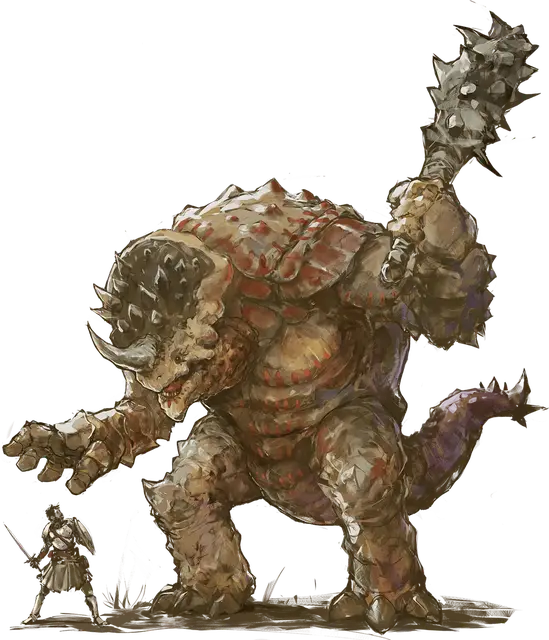

Браксат
Braxat
Огромный Великан, обычно нейтральный

Класс Доспеха 18 (природный доспех, крепость интеллекта)
Хиты 162 (13к12 + 78)
Скорость 40 футов
| мод | спас | ||
|---|---|---|---|
| СИЛ | 26 | +8 | +8 |
| ЛОВ | 8 | −1 | −1 |
| ТЕЛ | 22 | +6 | +6 |
| мод | спас | ||
|---|---|---|---|
| ИНТ | 14 | +2 | +2 |
| МДР | 13 | +1 | +1 |
| ХАР | 7 | −2 | −2 |
Иммунитет к урону кислота, психическая энергия
Иммунитет к состояниям испуг, очарование
Чувства тёмное зрение 60 футов, пассивное Восприятие 11
Языки Общий, Великаний
Опасность 9 (5000 опыта)
Бонус мастерства +4
Особенности
Крепость интеллекта. Браксат добавляет к своему КД модификатор Интеллекта.
Действия
Мультиатака. Браксат совершает две атаки Палицей.
Палица. . Рукопашная атака оружием: +12 к попаданию, досягаемость 10 футов, одна цель. Попадание: 21 (3к8 + 8) дробящего урона.
Кислотное дыхание (перезарядка 6). Браксат выдыхает 15-футовый конус кислоты. Каждое существо в конусе должно совершить спасбросок Телосложения Сл 18, получая 26 (4к12) урона кислотой в случае провала или половину этого урона в случае успеха.
Использование заклинаний (псионика). Базовой характеристикой браксата является Интеллект (Сл спасброска от заклинаний 14). Он может накладывать следующие заклинания, не нуждаясь ни в каких в компонентах:
• 1/день каждое: принуждение [compulsion], ужас [fear]
Реакции
Псионический щит (3/день). Когда по браксату попадают броском атаки или заклинанием волшебная стрела [magic missile], исходящим из источника, который он может видеть, браксат может создать вокруг себя невидимый барьер магической силы, который существует до начала его следующего хода. Этот барьер даёт браксату бонус +5 к КД, в том числе против срабатывающей атаки, и предотвращает попадание заклинанием волшебная стрела [magic missile].
Описание
Браксат — это высоченный теплокровный хищник с толстым сочленённым панцирем на спине. У него квадратная голова, увенчанная роговыми выступами, могучие руки и крупные кисти с отстоящими большими пальцами. Существо ходит на задних лапах и говорит похожим на человеческий голосом.
Браксаты охотятся в одиночку или парами, рыская в поисках добычи по пустыням, сухим каньонам, безлюдным пустошам и одиноким астероидам. Браксаты извергают кислоту, но делают это лишь в крайнем случае, поскольку та растворяет и разрушает живую плоть, которой они так жаждут.
Браксат создает вокруг себя невидимый психический барьер, усиливающий его естественную броню, и может усиливать его, создавая силовые пульсирующие щиты для отражения входящих атак и поглощения заклинания волшебная стрела [magic missile].